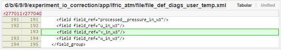
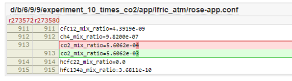
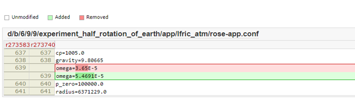
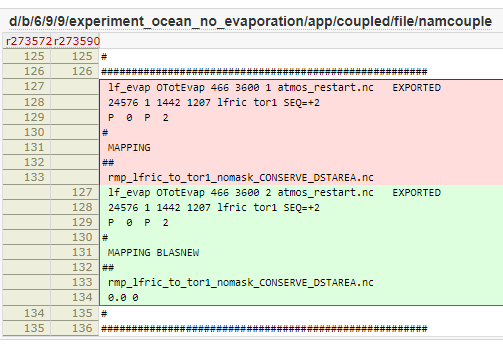
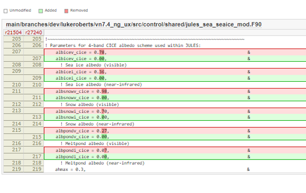

4. Introduction to Global Modelling with Momentum®
In this module you will learn how the Met Office global models are configured and run within the Momentum® Framework.
Hint
See the suite conf section in the Rose edit GUI.
Introduction to global coupled model configurations
Tools for running global coupled model configurations
Introduction to workflows
Note
On Version Control -
Inputs and outputs for GC-LFRic workflows
Editing a GC-LFRic workflow
Tracking the progress of your workflow
Practical 2 - Running a GC-LFRic Workflow
Aims and objectives
The aim of this tutorial is to gain experience in running and analyzing climate models.
Copy the GC5-LFRic climate model
Add extra diagnostics to the ocean, atmosphere and sea-ice
Running the climate model for 1 month on an HPC
Set up a range of other climate models where various parameters are changed to generate interesting results.
Visualize these results using Python/Iris.
How would you design your experiment?
What parameters do you want to test
Think about where you might change this – is it in the configuration namelist settings within the workflow or in a source code?
Browse the source code and workflow to look see how you might make this change.
What diagnostic would you plot to see the change?
Write your hypothesis on your post-it note and then we will discuss options
Note
If you design your own experiment with a code or configuration change, be ready to do lots of debugging. If you want an example which is tried and tested, use the given examples below.
A real world example
Kuhlbrodt, T., Jones, C. G., Sellar, A., Storkey, D., Blockley, E., Stringer, M., et al. (2018). The low-resolution version of HadGEM3 GC3.1: Development and evaluation for global climate. Journal of Advances in Modeling Earth Systems, 10, 2865–2888. https://doi.org/10.1029/2018MS001370
To achieve an acceptable simulation of Arctic sea ice thickness it proved necessary to reduce the albedo of snow on sea-ice by 2% in N96O1 for both infra-red (0.70 reduced to 0.68) and visible (0.98 to 0.96) parts of the solar spectrum, with all values well within observational constraints. This change was required due to the 1° ocean model failing to advect sufficient warm water into the Arctic Ocean through the narrow straits connecting the Atlantic with the Arctic
Main Practical
Run a simulation a with different experimental setup
Either use an existing experiment or your previous hypothesis
Create a branch for each new experiment (to limit the new workflow IDs created)
Plot the data and look for evidence of changes
Note
Feel free to enlarge the size of these changes (e.g. 20x CO2) if your analysis is not detecting much of an impact. Copy the output files (files explained at the end of the last section) to your local Linux workstation and analyse the files using Python/Iris. Try to plot differences between the experiments and the control in the fields that you think will be most strongly affected. If possible make a prediction at what these differences might show before you do the plots. Were your predictions right?
Adding a new diagnostic
The atmospheric diagnostic “v component of wind on pressure levels” is missing from this model. Use the following instructions to add it back to the configuration.
cd into ``app/lfric_atm/file``
open
file_def_diags_user_temp.xmlfind ``lfric_pressure_level_tdaym``
add in a new field for
v_in_w3
{kind=link}

Experiment 1 - CO2 x 10
cd into
app/lfric_atmopen the
rose-app.confsearch for
co2_mix_ratiochange this value from 5.60353e-04 to 5.60353e-03
{kind=link}

Experiment 2 – Reduce the rotation of the earth
cd
app/lfric_atmopen
rose-app-confchange
omega
{kind=link}

Experiment 3 – coupling remove influence of evaporation from ocean
cd
app/coupled/fileopen
namcoupleObserve namcouple file – what is it setting?
adjust definition of coupling for
lf_evap
{kind=link}

Note
Note on the namcouple file
Experiment 4 – make sea ice black
create JULES branch - See: Working Practices: Create a ticket, Working Practices: Create a branch
adjust hard coded values for the albedo in
src/control/shared/jules_sea_seaice_mod.F90
(set calbicev_cice, albicei_cice, albsnowv_cice, albsnowi_cice, albpondv_cice, albpondi_cice, dalb_mlt_cice, dalb_mlts_v_cice and dalb_mlts_i_cice to 0.0)
point your LFRic build setup in
paramerts.shto you JULES branch and adjust your workflow to use your adjusted model buildbuild the model and run your experiment
{kind=link}

Plotting your data
Script:/home/h02/lroberts/ngux/lfric_exercise/iris_ngux_module3.py
Select data for your control and experimental setups
Choose the diagnostic to plot
Run the script